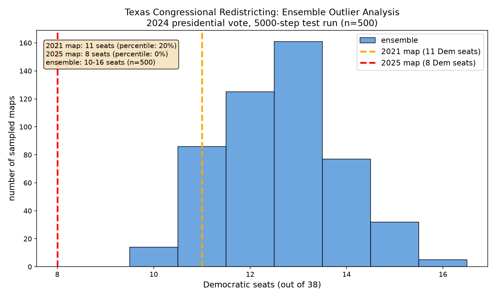
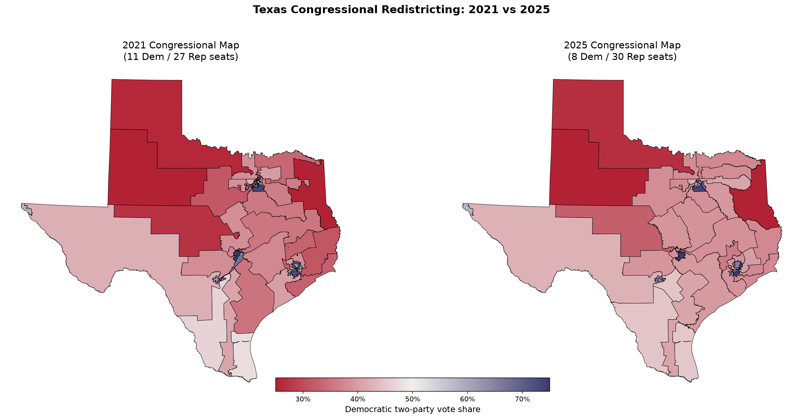

Why I started here
Texas is one of the newest states to redraw its district lines, and most gerrymandering projects haven't analyzed these maps yet. It's also an unusual case because Texas did a mid-decade redistricting in 2025, only four years after the last round. States normally wait until after the census every ten years.
With 38 congressional districts, it's one of the largest and most complex states to redistrict. I figured if the pipeline could handle Texas, it could handle anywhere.
The 2025 map is currently being challenged in LULAC v. Abbott. A three-judge federal panel heard nine days of testimony from 23 witnesses and found substantial evidence of racial gerrymandering. The Supreme Court later reversed the injunction on procedural grounds, but the full trial is still pending.
Results
I generated 500 valid alternative congressional maps, all following standard redistricting rules (population balanced within 5%, every district one connected piece). Then I checked how many Democratic seats each map would produce using the 2024 presidential vote.
The 2025 map produces only 8 Democratic seats. Not a single one of the 500 randomly generated maps went below 10. The enacted map sits completely outside the distribution.
The older 2021 map produces 11 Democratic seats. That's on the lower end but still falls within the normal range, at the 20th percentile.


Assumptions
Every analysis makes simplifications. Here are mine and why they matter.
I used the Harris vs. Trump results to measure how each precinct leans. This follows the approach in Duchin's expert testimony in the Pennsylvania case and the MGGG Lab's published work. A stronger version would test multiple statewide races to confirm the finding holds.
The ensemble checks that each district has roughly equal population (within 5%) and that every district is one connected piece. It doesn't check for compactness or county splits, which real commissions also care about. This actually makes an outlier finding stronger: adding stricter rules would narrow the range, making the enacted map look even more extreme.
There are 9,712 election precincts from 2024 but only 9,007 census VTDs from 2020. I used centroid-based spatial joins to match population data. About 1,500 precincts ended up with zero population, mostly water or empty land. The statewide total still matches the census.
500 maps is enough to establish a clear pattern. For court-grade evidence, you'd want 10,000 to 100,000. That's on the roadmap.
Data sources
| Dataset | Source | What it provides |
|---|---|---|
| 2024 General Election VTD Results | RDH / VEST | Precinct-level vote totals |
| 2020 PL 94-171 VTD data | Census Bureau via RDH | Population by VTD |
| 2025 Congressional Plan (PLANC2333) | Texas Legislative Council | Enacted 2025 boundaries |
| 2012-2021 Congressional Districts | Texas Legislative Council | Previous boundaries |